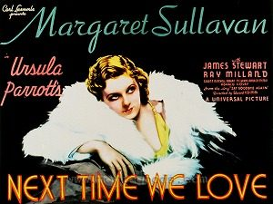

Next Time We Love
Starring: Margaret Sullavan, James Stewart, Ray Milland
Director: Edward H. Griffith
Writer: Ursula Parrott
Producer: Paul Kohner
Next Time We Love is a 1936 American melodrama film directed by Edward H. Griffith and starring Margaret Sullavan, James Stewart and Ray Milland. The adapted screenplay was by Melville Baker, with an uncredited Preston Sturges and Doris Anderson, based on Ursula Parrott's 1935 novel Next Time We Live, which was serialized before publication as Say Goodbye Again. The film is also known as Next Time We Live in the U.K.
Trivia
- Ursula Parrott was a popular novelist of the time, several of whose novels were turned into films, most prominently Ex-Wife which became the 1930 movie The Divorcee.
- The story which provided the source material for Next Time We Love was first serialized as Say Goodbye Again in McCall's from December 1934 to April 1935, and was then published as a novel called Next Time We Live, which was also the working title of the film.
- Francis Lederer was originally cast for the part of Christopher Tyler, but was unavailable.
Previous Showings
4 Runs • 2 Festivals
Original Billings: 1 run (April 9, 1936)
Original Run: April 9, 1936 (Thursday - Saturday)
All runs on record (4):
- April 9, 1936 (Thursday - Saturday)Margaret Sullavan, James Stewart
- May 30 - 31, 1990w/ The Shopworn Angel
- January 15 - 17, 2013January 2013 More Classics from Universal Picturesw/ You're a Sweetheart
- June 26 - 27, 2019James Stewart Festivalw/ The Mortal Storm